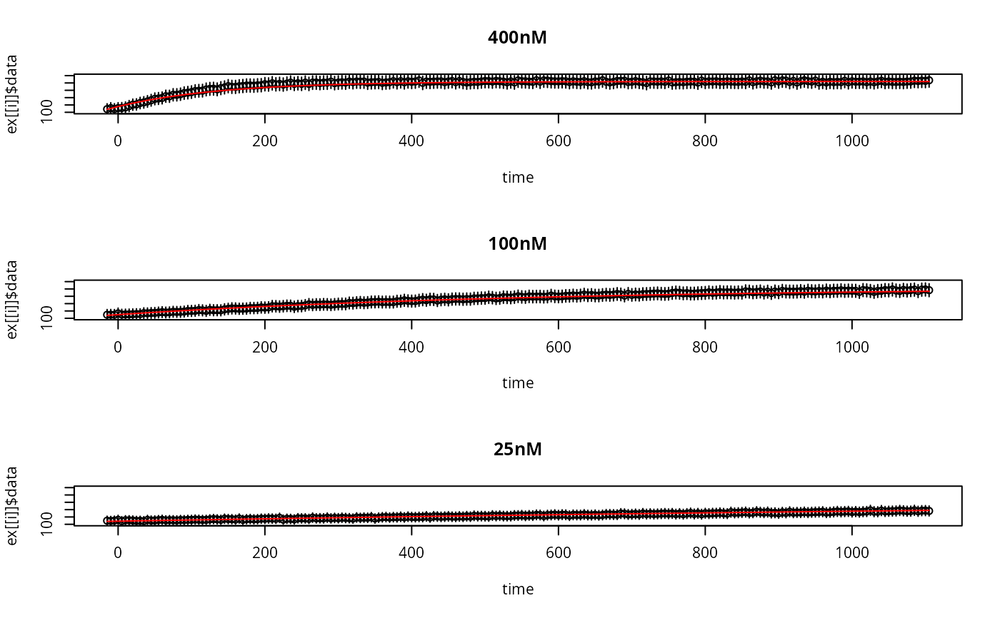

simulates an ode model with extra work
gsl_odeiv2_fi.RdThis function calls a C function which solves an initial value
problem, calculates the sensitivity of the solution, log-likelihood
value ll, gradient of ll amd Fisher-Information.
Usage
gsl_odeiv2_fi(
odeModel,
experiments,
p,
abs.tol = 1e-06,
rel.tol = 1e-05,
initial.step.size = 0.001,
method = 0,
omit = 0
)Arguments
- odeModel
the name of the ODE model to simulate (a shared library of the same name will be dynamically loaded and needs to be created first). Alternatively this can be the ode object created by as_ode, with a shared library path attached to it.
- experiments
a list of
Nsimulation experiments (time, parameters, initial value, events)- p
a matrix of parameters with M columns
- abs.tol
absolute tolerance, real scalar
- rel.tol
relative tolerance, real scalar
- initial.step.size
initial value for the step size; the step size will adapt to a value that observes the tolerances, real scalar
- omit
an integer that indicates how many of these to omit in this order: fisher information, gradient of the log-likelihood, log-likelihood
Value
a list of the solution trajectories y(t;p) for all
experiments (named like the experiments), as well as the output
functions
Details
The model is always simulated using a shared library. The path to the shared library can be passed in three different ways:
Character vector:
odeModel <- c("AKAKR4","/tmp/path/AKAR4.so")A comment:
comment(odeModel) <- "/tmp/path/AKAR4.so"As part of the ode object:
The shared library needs to be created first. Either with R CMD SHLIB, shlib, or manually on the system's command line (bash, zsh, etc.).
Examples
# \donttest{
requireNamespace("errors")
f <- uqsa_example("AKAR4")
m <- model_from_tsv(f)
o <- as_ode(m)
ex <- experiments(m,o)
C <- generate_code(o)
c_path(o) <- write_c_code(C)
#> Writing file: /tmp/RtmphJ6fjy/adf9204aaf2748b8/AKAR4.c
so_path(o) <- shlib(o)
print(o)
#> Model name : AKAR4
#> C file : /tmp/RtmphJ6fjy/adf9204aaf2748b8/AKAR4.c [2026-04-19 19:47:18.798804]
#> shared library : /tmp/RtmphJ6fjy/adf9204aaf2748b8/AKAR4.so [2026-04-19 19:47:18.798804]
#> Number of state variables : 2
#> Number of parameters : 5
#> Number of outputs : 1
#> Conservation laws : 2
#> Transformations : no
y <- gsl_odeiv2_fi(o,ex,values(m$Parameter))
print(length(y))
#> [1] 3
print(names(y[[1]]))
#> [1] "cpuSeconds" "status" "state"
#> [4] "func" "logLikelihood" "gradLogLikelihood"
#> [7] "FisherInformation"
par(mfrow=c(length(ex),1))
for (i in seq_along(y)){
plot(
errors::as.errors(ex[[i]]$outputTimes),
ex[[i]]$data,
xlab="time",
ylab=rownames(y[[i]]$data)[1],
main=names(ex)[i],
ylim=c(100,200)
)
lines(ex[[i]]$outputTimes,drop(y[[i]]$func),col='red')
}

# }